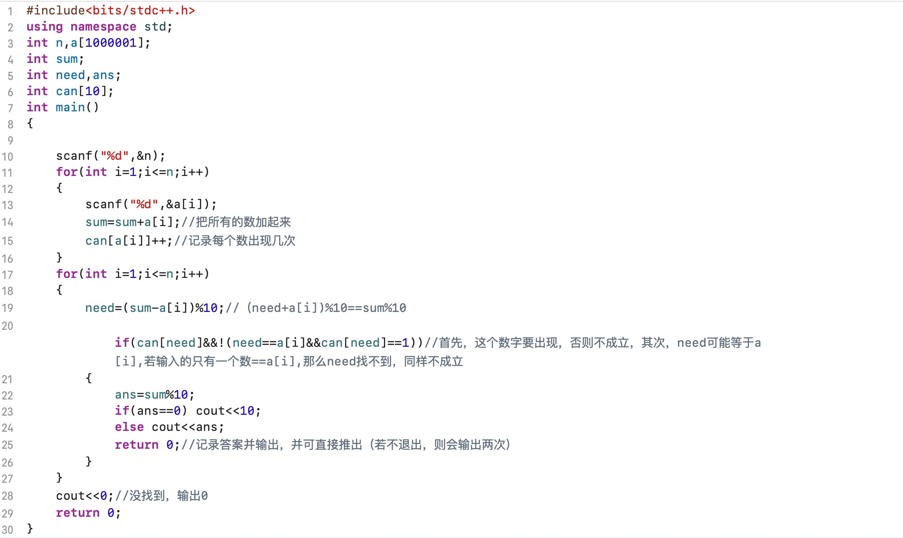

本题取n-2个数，让它们的和是十的倍数，那么，剩下两个数的和%10就等于n个数的和%10（显而易见，不证了）
那么，是不是我们要把a[1~n]枚举之后，再枚举a[1~n]，并分别判断成不成立呢？
不是，我们枚举一遍a[1~n]之后，我们需要的那个数字就已经确定了，这时我们只要判断这个数有没有出现即可。题目说，a[i]<=9,那么，我们只要开一个长度为10的数组，来记录每个数出现过没有即可。
但是，记录有没有出现还不行，如果a[i]==(sum-a[i])%10而且这个数只出现一次呢？所以我们需要记录每个数出现过几次。
